Descripción
Sistema cliente-servidor desarrollado en Python. El servidor recibe tareas mediante sockets TCP y las distribuye entre un pool de workers para procesarlas de forma concurrente.
Código fuente disponible en GitHub. Documentación de la versión anterior (PFO 2).
Arquitectura

El diagrama representa la arquitectura distribuida del sistema. La implementación local se concentra en la comunicación por sockets y la distribución concurrente entre workers. RabbitMQ, PostgreSQL, S3 y el balanceador quedan definidos como la evolución necesaria para desplegar varias instancias.
Recorrido de una tarea
- El balanceador distribuye las conexiones entre los servidores de sockets.
- Los servidores intercambian tareas y resultados mediante la cola de mensajes.
- Los workers procesan las tareas y acceden al almacenamiento distribuido.
- Los resultados regresan al servidor a través de la cola para responder al cliente.
Implementación local
En la implementación local, el cliente se conecta directamente al servidor
TCP. El servidor valida la solicitud y la envía a un
ThreadPoolExecutor, que distribuye el trabajo entre sus hilos.
servidor.py- Acepta conexiones, valida las solicitudes y coordina el pool de workers.
cliente.py- Permite enviar tareas desde la consola y consultar los resultados.
protocolo.py- Serializa los mensajes JSON y controla su formato y tamaño.
El cliente permite convertir texto a mayúsculas, contar palabras y sumar números. Cada respuesta indica el worker que procesó la tarea.
Estructura del repositorio
.
├── cliente.py # Cliente de consola
├── protocolo.py # Intercambio de mensajes JSON por TCP
├── servidor.py # Servidor y pool de workers
├── tests/ # Pruebas automáticas
├── pfo2/ # Versión anterior con Flask y SQLite
└── docs/ # Documentación en GitHub PagesEjecución local
Se requiere Python 3.10 o superior y pip disponible.
La aplicación utiliza solamente módulos de la biblioteca estándar de Python.
Los siguientes comandos se ejecutan desde la raíz del repositorio, en PowerShell.
1. Preparar el entorno
py -m venv .venv
.\.venv\Scripts\Activate.ps1
py -m pip install -r requirements.txt2. Iniciar el servidor
py servidor.py
De forma predeterminada escucha en 127.0.0.1:5000
y utiliza cuatro workers. Estos valores se pueden modificar:
py servidor.py --host 0.0.0.0 --puerto 5000 --workers 43. Ejecutar el cliente
En otra terminal, desde la misma carpeta:
.\.venv\Scripts\Activate.ps1
py cliente.pyProtocolo de comunicación
El cliente y el servidor intercambian un objeto JSON por conexión. Cada mensaje termina con un salto de línea para que el receptor pueda reconocer su final.
Ejemplo de solicitud
{
"id": "identificador-de-la-tarea",
"tarea": {
"tipo": "contar_palabras",
"texto": "programación sobre redes"
}
}Ejemplo de respuesta
{
"ok": true,
"id": "identificador-de-la-tarea",
"resultado": {
"tipo": "contar_palabras",
"valor": 3,
"worker": "worker_0"
}
}Pruebas
Instalá las dependencias de desarrollo y ejecutá las pruebas:
py -m pip install -r requirements-dev.txt
py -m pytest -qLas pruebas verifican el procesamiento de tareas, el rechazo de datos incorrectos, la validación del protocolo y el recorrido completo entre el cliente, el servidor y los workers.
Publicación y versión anterior
GitHub Pages aloja esta documentación. El servidor TCP y el cliente de consola se ejecutan de forma local.
La versión anterior, basada en Flask y SQLite, se conserva en la carpeta
pfo2/,
junto con su cliente, pruebas y capturas.
Su documentación sigue disponible.